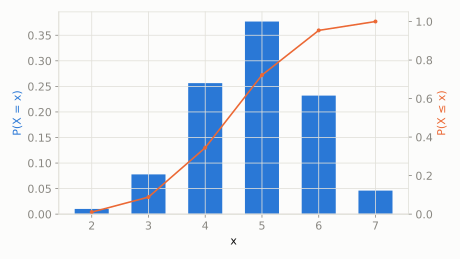

Discrete extended catalog
Wallenius' Noncentral Hypergeometric
scipy.stats.nchypergeom_wallenius
Intuition
Wallenius' version models the same biased-draw idea as Fisher's, but for drawing objects one at a time (without replacement) rather than all in one handful -- the bias compounds sequentially as the pool of remaining objects shrinks, giving subtly different odds than Fisher's simultaneous-grab version.
Formula
\[ p(x;N,n,M,\omega) = \binom{n}{x}\binom{M-n}{N-x}\int_0^1\left(1-t^{\omega/D}\right)^x\left(1-t^{1/D}\right)^{N-x}dt \]
| parameter | default used here | meaning |
|---|
M | 20 | total number of objects in the bin |
n | 7 | number of Type I objects in the bin |
N | 12 | number of objects drawn (one at a time) |
odds | 1.5 | odds ratio favoring Type I objects being drawn |
Use cases
- Sequential biased sampling models in ecology and genetics
- Modeling sports draft/selection processes with preferential picking
A funny example
Same jar of 7 red and 13 blue gumballs, but now the kid picks 12 of them out one at a time, and each time a sticky red gumball is 1.5 times more likely to be grabbed next than a blue one, updating as gumballs are removed.
What's the probability the kid ends up with exactly 5 red gumballs after picking one at a time?
Solve it with scipy.stats
import scipy.stats as stats
import numpy as np
dist = stats.nchypergeom_wallenius(M=20, n=7, N=12, odds=1.5)
print('P(exactly 5 red):', round(dist.pmf(5), 4))
print('expected red count:', round(dist.mean(), 4))
P(exactly 5 red): 0.3769
expected red count: 4.8792

Theoretical shape at the default parameters above (blue = density/PMF, orange = CDF).